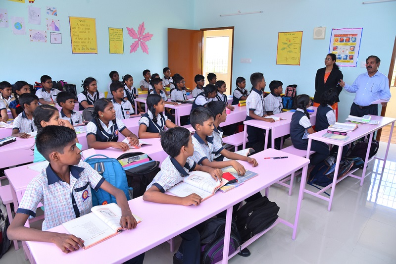
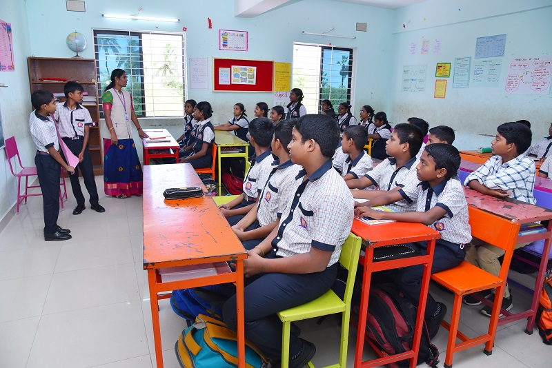
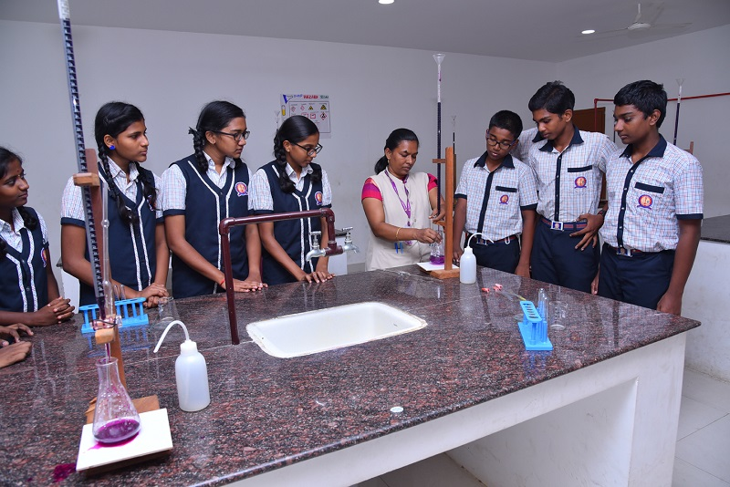

WELCOME TO OUR LEARNING JOURNEY

OUR COURSES
students photo

KINDERGARTEN
The faculties of Kindergarten have regular and frequent training sessions for productive instructions on play way method utilizing motor skill development, oral training in communicative skills, creative and enquiry based learning.
Primary photo
PRIMARY
The learning Pyramid in Primary classes are designed to stimulate students into academic inquisitiveness which helps to grow into a structural phase of learning. The specific areas of learning includeLanguages (English, Mother Tongue and Hindi).
upperclass photo
UPPER PRIMARY
The learning Pyramid in Junior classes are designed to stimulate students into academic inquisitiveness which helps to grow into a structural phase of learning. The activities accentuate creative thinking, critical thinking, along with cognitive physical, emotional, technical and empathetic skills.
secondary photo

SECONDARY
So the students at secondary level are strengthened in cognitive and critical learning by analyzing concepts of science, social science and mathematics. Discursive learning happens with project based and explores hands on learning to perceive concepts clearly.
senior secondary photo
SENIOR SECONDARY
Students entering into senior secondary classes XI and XII are in a very important stage of their academic journey. Here we offer them the subjects prescribed by the CBSE Bye-laws. The course is oriented towards their future career and that supports in their higher education.
STREAMS - WE OFFER
SCIENCE STREAM
Science stream is available for those who aspire to pursue professional courses after 12th. The primary subjects in science stream are Physics, Chemistry, Biology, Mathematics & Computer Science Among other subjects,English his compulsory while the other language subjects are left for choice. There are also practical labs along with theory, which calls for a lot of hard work for students in this stream. This stream provides career options for medical and non-medical, including medical science, engineering, and other interdisciplinary careers. Those interested in medical field, need to include Biology along with Physics and Chemistry as core subject and replace mathematics with computer science
Those interested for engineering, can replace biology with computer science or physical education as the core subject. However, there are also other career options including either two or only one of the science subjects.Choosing science stream after 10th, offers options to pursue further higher education in diverse fields.
COMMERCE STREAM
Commerce stream is another good option after 10th standard. The core subjects in the commerce stream are Accountancy, Economics, Business Studies, and an Elective Subject. English his compulsory. Elective subjects that we offer are Mathematics, and computer science. Students have a wide range of opportunities on selecting the commerce stream. One can choose fields related to business, banking, trade, finance and accounting as your career option.
Few of the popular graduate courses after 12th for the commerce stream are BBA, B.Com, BMS, CA, BBM and more. Hence, if you have a natural inclination towards mathematics and analytics, you should prefer taking up commerce field.
OUR CLUB ACTIVITIES
Club Activities
We provide various club activities such as Nature - Eco Clubs, Integrity Club, Social Club, Language Club, Cultural Club, Art Club, English Club, Math Club and Science Club. It widens their learning horizon and also fun team to grow with similar thoughts and likes which is fun. It is also a point where great future of growing with values is started each and every day. The activities are conducted every month with an activity that helps our students to build up team spirits, act as collaborative thinkers and execute with confidence.
ST.ANTONY'S PUBLIC SCHOOL
The signature performance of every child is nurtured from their tiny emerging steps through strategized activities to help excel & be enlightened to become a responsible & successful citizen.


contact information
St.Antony's Public School
VM Chatram, Maharaja Nagar Post,
Tirunelveli, Tamil Nadu - 627011
Mail :stantonyspschool@gmail.com
Phone No. :0462 - 252 2466
Mobile No. :+91 - 9489206228
2022 ,st antonys public school
by jesteen / jesteen creative